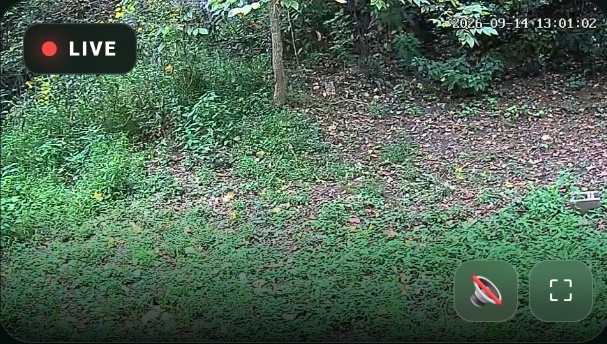
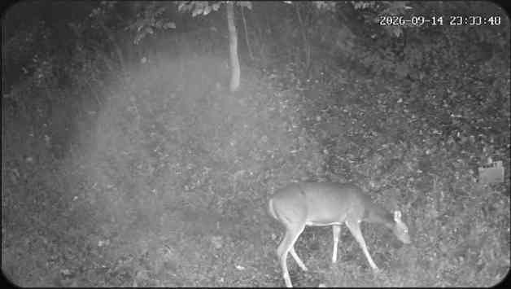

EAST BANK • CAMERA 01
East Bank
The flagship wildlife view: woodland cover, creek edge, and a natural wildlife corridor. The production site is designed to deliver this camera as a browser-ready live stream.
A growing network of wildlife cameras, community features, visitor archives, sponsorship opportunities, and West Virginia nature experiences built around one simple idea: real places, real wildlife, happening in real time.

The flagship wildlife view: woodland cover, creek edge, and a natural wildlife corridor. The production site is designed to deliver this camera as a browser-ready live stream.
A live-look concept centered on the chicken coop, designed as a personality-rich companion camera with sponsorship potential and repeat daily engagement.
Multiple named camera locations with a shared WVLRP identity, browser playback, night viewing, and room to expand.
Camera sightings become lasting content instead of disappearing after the live moment — building a searchable, shareable history.
Per-camera sponsorships create a natural path to fund equipment, hosting, maintenance, and future locations without paywalling viewers.

The first archived WVLRP wildlife visitor was an adult doe captured at East Bank on September 14, 2026. That sighting demonstrates the core loop: watch live, capture real wildlife moments, archive them, and bring viewers back to see what appears next.